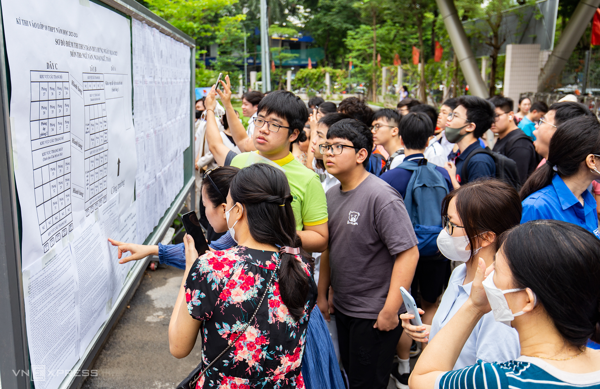

Sở Giáo dục và Đào tạo Hà Nội tối 30/6 công bố điểm thi vào lớp 10 công lập của hơn 104.000 thí sinh. Phụ huynh, thí sinh có thể tra cứu điểm thi lớp 10 tại đây hoặc cổng thông tin tuyển sinh của Sở Giáo dục và Đào tạo Hà Nội. Nếu muốn phúc khảo, trong thời hạn 10 ngày từ khi công bố điểm thi, thí sinh phải làm đơn và gửi tại nơi đăng ký dự thi. Trong vòng 15 ngày từ khi hết hạn nhận đơn, Hội đồng thi công bố và thông báo kết quả cho các em. Đề thi Toán, Văn, Ngoại ngữ thi vào lớp 10 của Hà Nội năm nay được nhiều giáo viên nhận xét quen thuộc, giữ ổn định cấu trúc và không khó hơn năm ngoái, nên điểm phổ biến của mỗi môn khoảng 7-7,5. Điểm chuẩn được dự đoán tăng nhẹ, từ 1 tới 1,25 điểm. Ngày mai, Sở sẽ cùng hiệu trưởng của hơn 110 trường THPT họp bàn về điểm chuẩn lớp 10, sớm một tuần so với kế hoạch. Nếu trúng tuyển, thí sinh nhập học trực tuyến. Từ ngày 18/7, những trường chưa đủ chỉ tiêu bắt đầu xét tuyển bổ sung.
